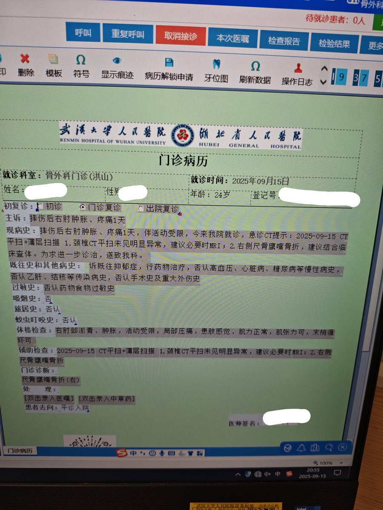
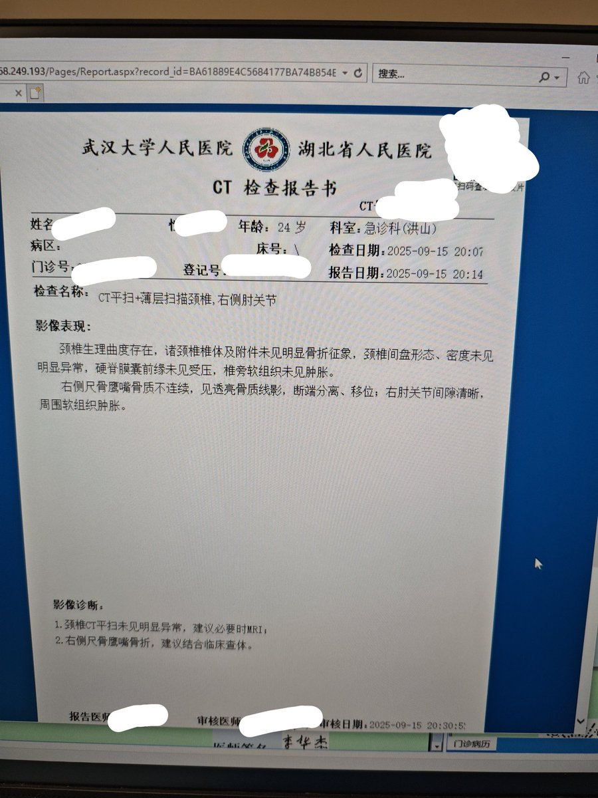

北雁冬翼（simone luxem）🏳️⚧️🏳️🌈🔬
@Simone_Luxem
在此提醒大家，尤其是各位xyn，一定不要盲目减肥，一定要给自己留点皮下脂肪，否则没有一点缓冲随便摔一跤就骨折了…
以及发现可能有骨折的情况就快去检查，否则骨折部位自由移动是很可能造成次生损伤的..


寒涟漪
@HANLIANYI331
这几天压力很大，整个人晕晕乎乎，昨天武汉暴雨，路边泥滑，走路摔跤，摔到了右胳膊，剧疼，当时以为软组织挫伤，没在意
今天来医院看诊，结果是骨头碎了，需要做手术，两万多元
把自己逼的太狠，从早忙到晚，疲惫值没控制好，结果捡了芝麻丢了西瓜 https://t.co/DsMVacfEaO